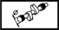

CYLINDER HEAD INTAKE AND EXHAUST SHAFTS
- Path
- Technical Data > Manufacturing data > 10 ENGINE > 1036 TIMING SYSTEM > CYLINDER HEAD INTAKE AND EXHAUST SHAFTS
- Kind
- technical data / specifications
- Applies to
- all engines; all production periods
- Interactive page
- https://sloeber94.github.io/elrnDB-a156/en/#/3233540
Applies to: all engines; all production periods
Diameter (mm) | Validity |  | ||
|---|---|---|---|---|
Fifth pin Third pin | First pin | Fourth pin | Second pin | |
43,000 ÷ 43,015 43,400 ÷ 43,415 2.4 JTD 20v | 43,800 ÷ 43,815 | 43,200 ÷ 43,215 | 43,600 ÷ 43,615 | |
Diameter (mm) | Validity |  | ||
Fifth support Third support | First support | Fourth support | Second support | |
43,046 ÷ 43,071 43,446 ÷ 43,471 2.4 JTD 20v | 43,846 ÷ 43,871 | 43,246 ÷ 43,271 | 43,646 ÷ 43,671 | |
Nominal cam lift (mm) | Validity | |||
Exhaust | Inlet | |||
8 | 8 | 2.4 JTD 20v | ||
End float (mm) | Validity | |||
|---|---|---|---|---|
0.10 - 0.23 | 1.8 TS [d] 1.6 TS | |||
Journal diameter (mm) | Validity | |||
26.000 - 26.015 | 1.8 TS [d] 1.6 TS | |||
Camshaft bearing diameter (mm) | Validity | |||
|---|---|---|---|---|
26.959 ÷ 26.980 | 3.2 V6 | |||
Camshaft nominal cam lift (mm) | Validity | |||
9.30 | 3.2 V6 | |||
End float (mm) | Validity | |||
0.060 - 0.201 | 2.5 V6 | |||
Journal diameter (mm) | Validity | |||
25.959 - 26.980 | 2.5 V6 | |||
Nominal cam lift (mm) | Validity | |||
9.30 | 2.5 V6 | |||
Camshaft end float (mm) | Validity |  | ||
|---|---|---|---|---|
0.060 ÷ 0.201 | 3.2 V6 | |||